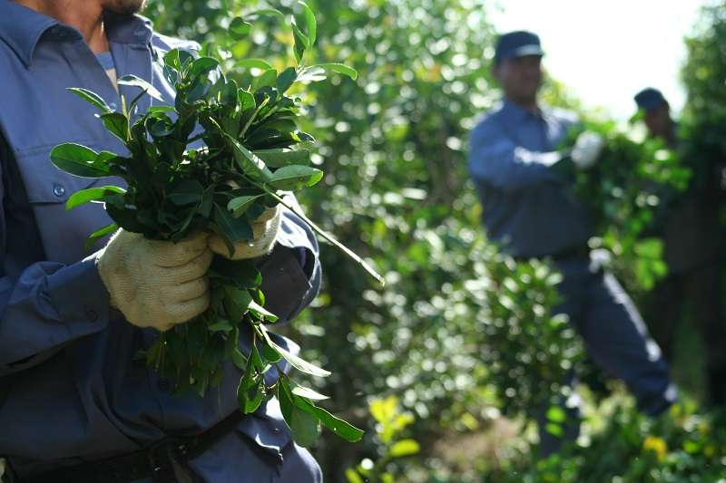

¿Qué es el mate?
El Mate es la infusión más típica de Argentina, tanto así que es considerada la bebida nacional del país. Además, es muy popular en muchos otros países de América del Sur. Cuando hablamos de mate, no solo nos referimos a beber esta infusión, sino que también es una práctica social, similar a salir a tomar un café con amigos en otros países. Dato curioso: Según el Instituto Nacional de la Yerba Mate (INYM), en la Argentina se consume un promedio de 6,4kg de yerba por habitante al año. Por otro lado, el mate es recomendado por los expertos ya que es rico en antioxidantes y anticancerígenos. La planta de yerba mate también cuenta con gran cantidad de vitaminas y minerales. Todo esto hace que su consumo sea muy beneficioso para la salud.
¿Dónde se produce?
La Yerba Mate Argentina se produce y cultiva en Misiones y nordeste de Corrientes ya que sus suelos cuentan con gran contenido de hierro y el clima son ideales para su cultivo. Nuestro país es el principal productor y exportador mundial de Yerba Mate.